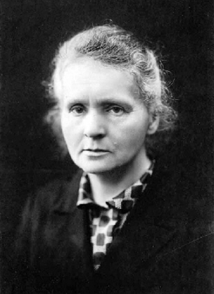
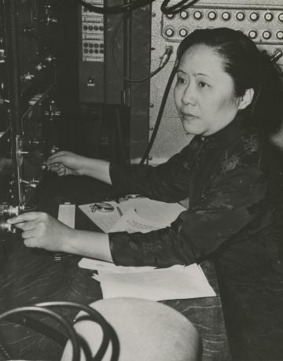
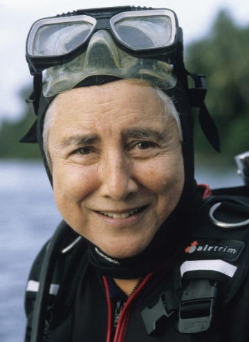
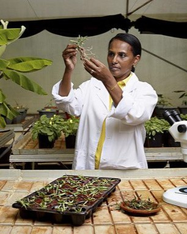

Science is the systematic study of the natural world through observation and experimentation to build a body of knowledge.
Scientific disciplines include biology, chemistry, physics, and environmental science, all of which involve using a methodical approach to explain and predict natural phenomena.
Thanks to scientists, we have developed a deep understanding of our
bodies, our surrounding environment and the outer space. According to
the
U.N, in the USA, women were on par with men in life, physical and
social sciences, but that ranged widely - from 36% who worked as
chemists, to 55% who were biologists, to 88% who were school
psychologists.
Influential Women in Science
From the 13th century when women started going to college to the present day, we have so many powerful and innovative women that have shaped the science of today.
Marie Curie
1867-1934

"progress is neither swift nor easy"
Marie Curie was a Polish pioneering physicist and chemist whose work focussed on radioactivity.
She was the first woman to win a Nobel Prize, the first person and only woman to win it twice,
and the only person to win the prize in two sciences.
Frances Arnold
1956 - Now “If you’re going to change the world, you’ve got to be fearless.”
With one ingenious idea and years of subsequent work, Frances Arnold turned bioengineering upside down.
Recognising that nature was “the best bioengineer in history,” she figured out how to let evolution be her partner in the lab.
She pioneered the use of directed evolution to design new enzymes, with applications as broad as they are essential,
from pharmaceuticals to renewable fuels. She won Nobel Prize in Chemistry in 2018.
Chien-Shiung Wu
1912 - 1997

"I wonder whether the tiny atoms and nuclei, or the mathematical symbols, or the DNA molecules have any preference for either masculine or feminine treatment" Chien-Shiung Wu was a Chinese experimental physicist whose experiments revolutionised our understanding of nuclear physics and
Beta Decay – a type of radioactive decay in which protons in the nuclei of unstable elements convert to neutrons or vice versa.
She was known as the “First Lady of Physics" and the “Queen of Nuclear Research".
Eugenie Clark
1922-2015

"We may never fully understand the mysteries of the ocean, but that should not stop us from trying"
Eugenie Clark was a Japanese-American Ichthyologist, also known as The Shark Lady. Her work and research on shark behavior led her to produce more than 175 scientific articles that allowed her to dispel assumptions about sharks and promote the preservation of marine environments.
She also conducted various studies of fish in the order Tetraodontiformes. C
lark is also considered as the authority in scuba diving for research.
Ana Roqué de Duprey
1853-1933
Ana Roqué de Duprey was born in Puerto Rico in 1853. She started a school in her home at age 13 and wrote a geography textbook for her students, which was later adopted by the Department of Education of Puerto Rico.
Roqué had a passion for astronomy and education, founding several girls-only schools as well as the College of Mayagüez, which later became the Mayagüez Campus of the University of Puerto Rico.
Roqué wrote the Botany of the Antilles, the most comprehensive study of flora in the Caribbean at the beginning of the 20th century, and was also instrumental in the fight for the Puerto Rican woman’s right to vote.
Segenet Kelemu
1957 - Now

Segenet Kelemu, an Ethiopian molecular plant pathologist, grew up in a poor farming family and after studying abroad for 25 years, she returned to help farmers grow food and escape poverty.
She studies microorganisms in plants and their environmental responses, helping scientists understand how biotechnology can improve food security.
Kelemu has received international accolades, including the L'Oreal-UNESCO Award for Women in Science Laureate in 2014.
Women remain
underrepresented in STEM occupations
35%
of students in STEM-related fields are women
Only
33%
of young girls are in STEM by the time they reach highschool